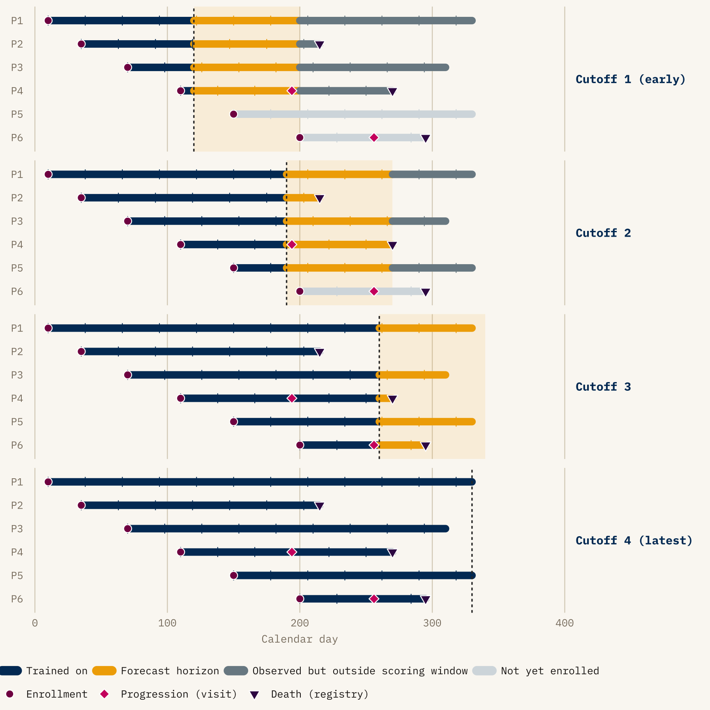
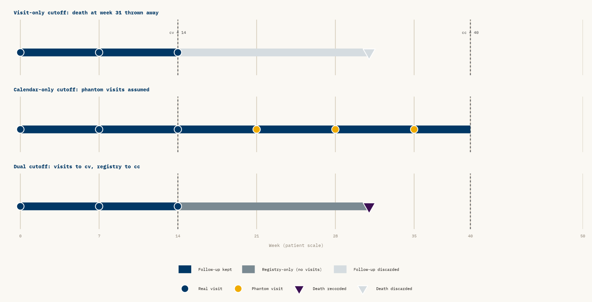

Leave-Future-Out Beyond Time Series
Temporal cross-validation for hierarchical mechanistic survival models
2026-05-14
1 Carrying LFO into a new neighborhood
Leave-future-out cross-validation (LFO) scores a model only on data that arrives after the data it was trained on. Bürkner, Gabry and Vehtari formalized it in Bürkner et al. (2020). They address a well-recognised problem: Bayesian time-series models evaluated with leave-one-out cross-validation [LOO; Vehtari et al. (2017)] end up using observations from the future to “predict” observations in the past, and the resulting score systematically overstates predictive accuracy. Their solution is to split by calendar time instead of by observation index. The paper’s lasting contribution is a practical recipe: when an exact refit is needed, when Pareto-smoothed importance sampling (PSIS) gives an adequate approximation, and how to accumulate the log predictive density across a rolling origin in a form the loo package can ingest (Bürkner et al. 2024). It is the reference treatment of the topic on the Bayesian side.
The paper and the accompanying loo vignette work with univariate time series: AR(p) and ARMA models, a Gaussian process on a scalar outcome, and an AR(4) fit to 98 Lake Huron measurements as the worked example. The “observations” are evenly spaced, univariate, and belong to a single series. The cross-validation question is roughly: “if I had stopped watching at time \(t\), how well would I have predicted time \(t+1\), \(t+2\), \(\ldots\)?” The machinery is built around that question and answers it well.
In oncology survival analysis, at least the kind I spend most of my time on, almost none of that holds. There is no single time series. Patients enter the study at different calendar times. Each patient contributes a mix of longitudinal measurements (tumor burden at visits) and event times (progression, death). The clocks differ: tumor measurements follow a visit schedule, and deaths arrive from a registry. A latent mechanistic state (tumor growth and shrinkage) couples the longitudinal stream to the event stream. The unit of interest is a patient, embedded in a trial, embedded in a hierarchy. It is neither a single series nor a single “observation”.
The question LFO answers is still the one an oncology team asks: given today’s data cutoff, how accurately can the model forecast next year’s Kaplan-Meier curve, how well can it forecast the next RECIST1 classification, and how does that accuracy degrade with forecast horizon.
The diagram shows three ways LFO differs from LOO on this kind of data.
- The training region grows with the cutoff. Each panel refits on strictly more data than the panel above it.
- Staggered enrollment interacts with the cutoff. A patient not yet in the trial at Cutoff 1 contributes nothing to that fold (greyed-out rail) and is evaluated only from later cutoffs onward.
- Events are categorized by which side of the cutoff they fall on. Progression diamonds and death triangles in the navy region were known to the model. Those in the gold band are what the model’s forecast is scored against. Anything beyond the gold band is outside the scoring horizon for that cutoff.
The figure separates progression (pink diamonds, observed only at clinic visits) from death (dark plum triangles, observed exactly from registry linkage) on purpose. Much of the rest of the post is about what happens when those two observation mechanisms disagree about where the cutoff lies.
This post describes how I adapted LFO to that setting. It covers methodology, not results from any particular program. The anonymized figures below are illustrative in shape and contain no trial, arm, or patient-identifying detail.
2 What this post is, and is not, claiming as new
The question “given data up to time \(t\), how well do we predict events after \(t\)?” has a long history in biostatistics under names other than LFO. This section sets out that prior work.
The most important precedent is the dynamic-prediction-from-joint-models program started by Rizopoulos (2011). It is the structural ancestor of what I do here. It conditions on a patient’s longitudinal history through a landmark time, generates posterior predictions of subsequent event times from a fitted joint model, and scores those predictions on the still-at-risk cohort. Rizopoulos’s framework scores with time-dependent ROC/AUC and Brier scores instead of ELPD, and it is implemented today in JMbayes2. The more recent super-learner extension by Rizopoulos and Taylor (2023) uses V-fold cross-validation over subjects, with expected quadratic prediction error and predictive cross-entropy as scoring rules. None of this is LFO in the Bürkner et al. (2020) sense, but it asks the same question with different machinery.
The landmarking literature runs in parallel. It includes the original landmark Cox model (van Houwelingen 2007) and the more recent “Landmarking 2.0” paper by Putter and van Houwelingen (2021), which explicitly reframes landmark analysis as a competitor to joint-model dynamic predictions. In spirit, landmarking already does what LFO does: refit at a sequence of landmark times and evaluate prediction quality on data after each landmark. Devaux et al. (2022) extend this by combining landmarking with machine learning and cross-validated time-dependent Brier and AUC.
Given that prior work, the contribution of this post is narrower than “LFO for survival.” It consists of three pieces:
- Porting the Bayesian ELPD-LFO machinery (Bürkner et al. 2020, plus the broader Vehtari
looecosystem) into a hierarchical joint longitudinal–multistate model in Stan, the setting where the landmarking and AUC/Brier literatures already live. - Working out an observation-mechanism-aware re-censoring rule for that setting: the dual visit-week / calendar-week cutoffs. The time-series LFO literature does not need this rule. The joint-model dynamic-prediction literature has not, as far as I can find, written it down explicitly.
- Building a pipeline that runs exact refits on a calendar-cutoff schedule and reports both decomposed ELPD and posterior-predictive Kaplan-Meier overlays per cutoff.
I do not claim novelty for the principle. I do claim that the specific construction is useful, and I think it generalizes beyond the setting it was built for. Most of the rest of the post describes what the construction has to look like given the structure of oncology trial data.
3 What LFO is, before we complicate it
The minimal (2020) LFO is easy to state. Let \(y_{1:T}\) be a univariate time series. For each candidate cutoff \(t_c\), fit the model on \(y_{1:t_c}\) and evaluate the expected log predictive density on what comes next:
\[ \text{ELPD}_{\text{LFO}} = \sum_{c} \sum_{t > t_c} \log p(y_t \mid y_{1:t_c}). \]
Two properties make this useful. First, no future data leaks into training, so the evaluation respects the causal structure of the data. Second, ELPD differences between models have a Bayesian interpretation and an estimable standard error. That makes “model A forecasts better than model B” a quantitative claim.
Our setting needs a slightly more general form. Patients are indexed by \(i\). The data on each patient (visits, events) is a multidimensional history, not a scalar. So the inner sum is over \((i, t)\) pairs that fall after each cutoff, and the conditioning is on whatever has been observed for all patients up to the cutoff:
\[ \text{ELPD}_{\text{LFO}} = \sum_{c} \sum_{(i, t) \in \text{future}(c)} \log p\bigl(y_{i,t} \mid y_{1:c}\bigr), \]
where \(y_{1:c}\) is the cohort-level data up to cutoff \(c\) and \(\text{future}(c)\) is the set of patient–time pairs whose observations the model is being asked to forecast at \(c\). Most of the rest of the post is about choosing \(\text{future}(c)\) correctly: which patients, which observation channel, and up to which clock.
The practical cost is refitting. A naive implementation requires one MCMC run per cutoff. Bürkner et al. (2020) show that for many models a single full refit is enough. The cutoff then slides forward using PSIS weights, and a refit is triggered only when the Pareto \(\hat k\) diagnostic signals that importance sampling has broken down. This is what makes LFO tractable in practice.
4 The joint model, briefly
The LFO construction in the rest of the post is built around a particular model. This section sketches it.
The model has two coupled components, fitted jointly:
- A longitudinal state-space model for each patient’s tumor-burden trajectory, measured as the sum of target-lesion diameters (SLD). Latent SLD trajectories are parameterized per patient (baseline, shrinkage, regrowth) with hierarchical pooling across the trial structure. SLD is observed only at scheduled imaging visits. The target-lesion component of RECIST (CR / PR / SD / PD, driven only by SLD changes relative to baseline and nadir) is read off the SLD trajectory deterministically. Non-target response and new-lesion appearance are separate inputs to a full RECIST classification and sit outside this component.
- A three-state multistate hazard model for events: state 0 (on study, no recorded progression), state 1 (progressed), state 2 (dead). Three transitions are modelled: \(0\to 1\), \(0\to 2\), and \(1\to 2\). The \(0\to 1\) transition has two sources. Target-lesion progression is a deterministic function of the SLD trajectory once it crosses the RECIST threshold. Non-target/new-lesion progression is modelled probabilistically with its own hazard. Both can only be declared at a visit. The \(0\to 2\) and \(1\to 2\) transitions are modelled as standard survival hazards and are reported continuously through registry records.
The two components are coupled because the event hazards depend on the latent tumor state, not only on the SLD values that happen to be observed at visits. That dependence makes the model “joint” in the dynamic-prediction sense. It gives the factorization
\[ p(\text{SLD}_i, \text{MS}_i \mid \theta) = p(\text{SLD}_i \mid \theta)\, p(\text{MS}_i \mid \text{SLD}_i, \theta), \]
where \(\theta\) collects all model parameters: the population-level trajectories, the per-patient random effects, and the multistate hazard coefficients.
The ELPD decomposition later in the post rests on this factorization. Three points carry forward: SLD is observed on a visit clock, the multistate model uses mixed clocks, and the hazards depend on the latent tumor state.
5 Where time series LFO breaks for oncology
Take a typical phase-II or phase-III oncology trial. Patients are enrolled continuously over eighteen months or so. Each patient has:
- a latent tumor burden trajectory, observed at irregular visits through sums of lesion diameters (SLD),
- a baseline covariate profile (prior lines of therapy, PD-L1 status, metastatic sites, …),
- a set of potential event times: target-lesion progressive disease (target PD), non-target progression, death,
- a cluster membership (trial, arm, potentially site),
- and a calendar day of enrolment, which differs across patients.
A predictive evaluation at a data cutoff \(D\) has to answer three questions at once:
Whose data counts? A patient enrolled after \(D\) has never been seen by the model. Their trajectory is out-of-sample in a much stronger sense than a visit occurring after \(D\) for an already-enrolled patient. The evaluation could target the model’s ability to forecast existing patients’ futures, its ability to generalize to unseen patients, or both. These are different tasks and need different evaluations.
Which clock do we cut on? Tumor measurements are only made at visits. Deaths are observed exactly (to the day, typically from registry linkage). Take a patient whose last visit before the cutoff was week 14 and who dies at week 31, with \(D\) after week 31. That death is known but was never recorded at a visit. Cutting by visit would throw that information away. Cutting by calendar day alone would assume we observe progression continuously, which we do not.
What are we scoring? The primary model output might be a posterior-predictive Kaplan-Meier for overall survival. It might be a RECIST confusion matrix. It might be the joint log likelihood over the SLD stream and the multistate event stream. These are not interchangeable. They have different units, different sensitivities, and different clinical meanings.
None of these questions has a counterpart in the Bürkner et al. (2020) time-series LFO. They come from the structure of the oncology problem and do not indicate a flaw in the original method.
6 The shape of the solution
The rest of this post describes how my LFO implementation, built on the joint longitudinal–multistate model from the previous section, handles each of those questions. I do not show all the code. The pieces I refer to live in a modular Stan include system and a small R pipeline of helper functions. The ideas matter more than the architecture.
6.1 Calendar-day cutoffs on patient-specific clocks
The first design decision is that cutoffs are calendar dates, not study weeks. A cutoff of 2025-09-30 translates into a different study week for each patient: the week of that patient’s last pre-cutoff visit on their own time axis. Stan handles this with a per-patient date arithmetic step. Given the patient’s enrolment calendar day and the global cutoff, it computes the patient’s cutoff in their internal week scale, then walks the patient’s visit array backwards to find the last visit that falls at or before it.
int patient_cutoff_study_day =
calendar_date_to_study_date(patient_calendar_day[i], cutoff_calendar_day);
// ... find last visit day <= patient_cutoff_study_day, record its week.This conversion makes everything else well-defined. Without it, a shared cutoff means very different things for a patient enrolled early in the trial (lots of follow-up) and a patient enrolled late (perhaps only one or two visits past baseline).
6.2 Two cutoffs per patient, for two observation mechanisms
At any calendar cutoff, what we know about a patient arrives through two separate channels:
- Imaging visits. Tumor size, RECIST category, and therefore target-lesion progression are measurable only at scheduled visits. Between visits, the tumor state is unobserved.
- Registry records. Deaths are reported to the exact day, continuously, from sources independent of the visit schedule.
These two channels end at different points on the patient’s timeline. At any calendar cutoff, visit information ends at the patient’s last pre-cutoff visit. Registry information ends at the calendar cutoff itself. Take a patient whose last visit was week 14 and who is known from a registry report to have died at week 31. Their visit data ends at week 14. Their registry data ends wherever the calendar cutoff falls, for example week 40. The same cutoff date produces two different “last-known” points on the same timeline.
Figure 2 shows what goes wrong when both are collapsed into a single cutoff time. Censoring everything at the last visit throws away the week-31 death that the registry reported. Censoring everything at the calendar cutoff implicitly inserts phantom visits at weeks 21, 28, and 35 that were never performed. The patient would then have to be classified as progression-free through those weeks on the basis of data that does not exist.

cv = cutoff_visit_week and cc = cutoff_cal_week. Top panel: censoring at cv alone discards the registry-recorded death (faded triangle) and treats the patient as alive-at-last-visit. Middle panel: censoring at cc alone implicitly inserts phantom visits (gold ticks) between week 14 and week 40 that the trial never observed. Bottom panel: the dual rule keeps visit-derived information up to cv and registry-derived information up to cc, so the death at week 31 is correctly attributed and no progression is fabricated.
The re-censoring rule uses each channel up to its own “last-known” point and nothing beyond it.
- For visit-observed quantities (progression, continued at-risk follow-up, RECIST category), take the patient up to the last pre-cutoff visit and treat everything after that as unknown.
- For registry-observed quantities (death, whether or not it followed a recorded progression), take the patient up to the calendar cutoff itself and treat anything after it as not yet happened.
When an event crosses the cutoff, it is rolled back one step. A progression recorded after the last visit reverts to at-risk follow-up. A post-cutoff death reverts to whatever state the patient was in before dying. Patients not yet enrolled at the calendar cutoff have no visit history and no registry follow-up to keep, so they are dropped from that cutoff’s evaluation entirely. The rule is packaged in a single Stan function.
This rule is the operational definition of LFO for a multistate survival process in which different transitions are observed through different mechanisms. Getting it wrong inflates or deflates predictive accuracy, depending on which direction the error pulls, and nothing fails visibly. You will only catch it by checking that observed and posterior-predictive Kaplan-Meier curves match in the training region at each cutoff. That check should be automated in the pipeline, and I recommend that anyone adapting this approach do the same.
6.3 Scoring: decomposed ELPD plus endpoint-level KM
With re-censoring settled, the rest of the evaluation is comparatively straightforward.
The full log predictive density at a cutoff decomposes along the same factorization as the model itself:
\[ \log p(y_i^{\text{future}} \mid y_i^{\text{past}}, \theta) = \underbrace{\log p(\text{SLD}_i^{\text{future}} \mid y_i^{\text{past}}, \theta)}_{\text{tumor component}} + \underbrace{\log p(\text{MS}_i^{\text{future}} \mid \text{SLD}_i, y_i^{\text{past}}, \theta)}_{\text{multistate component}}. \]
Summing over patients and cutoffs, and averaging over the posterior of \(\theta\) from each refit, gives a total ELPD and two sub-totals. The sub-totals are useful diagnostics. A model that forecasts SLD well but multistate transitions poorly has a different problem from a model that does badly on both. The decomposition shows which half is failing.
Alongside ELPD I track two endpoint-level diagnostics:
- Cutoff-by-cutoff Kaplan-Meier overlays. At each cutoff I plot the posterior-predictive KM (overall survival, PFS, per-arm or per-subgroup) from the refit at that cutoff, and let subsequent cutoffs’ observed curves fill in the region that was “future” at the time. A model that looks fine when the observed curve is averaged over the whole study can still be persistently too optimistic between two adjacent cutoffs. No single summary number flags that kind of miss, and the overlay shows it directly. Comparing posterior-predictive and observed KM at a fixed cutoff is a standard joint-model check. What is new here is that the comparison is made against data observed later, not against the training cohort that produced the fit.
- RECIST confusion matrices aggregated over all out-of-sample visits and cutoffs, from which I compute per-class sensitivity and specificity. This is a side benefit of the joint model. Once the tumor trajectory is forecast, the RECIST classification is deterministic, so “how often did the model correctly predict that this patient would be in progressive disease a year from the cutoff?” becomes a quantity with a posterior distribution.
6.4 Exact refits vs PSIS: when is the shortcut safe?
The pipeline supports the Bürkner et al. (2020) PSIS-LFO approach (max_n_rows = n_cutoffs with a forecast horizon spanning all cutoffs, triggering a single refit whose posterior is reweighted at each cutoff). In practice, I default to exact refits. The reason is specific to the problem. When the cutoff moves, the structure of the data changes, not just its volume. A patient who was at-risk at cutoff \(c_1\) may be in state 1 at cutoff \(c_2\). A patient enrolled between \(c_1\) and \(c_2\) is admitted to the likelihood only at the later cutoff. The mapping from posterior at \(c_1\) to the likelihood at \(c_2\) is therefore more than the simple “add a few more observations” case that PSIS handles well. The Pareto \(\hat k\) diagnostic flags this reliably. But by the time you have diagnosed it across several cutoffs, you have effectively paid the cost of refitting anyway. For production evaluation I run exact refits on a schedule of cutoffs spaced by a configurable number of days, starting at the first landmark-eligible date. For development iteration, PSIS is a useful shortcut.
6.5 Standard errors: why the time-series recipe does not transfer
In the Bürkner et al. (2020) setting, uncertainty in the ELPD estimate comes from a single analytic formula: if the \(T\) pointwise log scores are treated as exchangeable contributions, then the SE is \(\sqrt{T \cdot \widehat{\mathrm{Var}}_t(\hat\ell_t)}\). That is what loo reports. It works because the summation unit (time \(t\) on a single series) is also the unit the exchangeability assumption applies to.
In the oncology setting that assumption fails in two ways. A single patient contributes correlated scores across their own visits, and the same patient reappears at every cutoff they were enrolled for. So the \((i, t, c)\) contributions inside the ELPD sum are heavily nested. They form \(\sim N\) patient-clusters, each contributing many correlated scores, instead of \(T\) independent draws. The time-series formula treats them as independent. That counts the same evidence many times over and produces an SE that dramatically understates uncertainty.
We therefore need an SE estimator built around the right unit of independence. Across patients we are willing to assume exchangeability, which is the assumption the hierarchical model encodes. Within a patient we are not. A non-parametric bootstrap over patients expresses that asymmetry without a closed-form variance derivation. It simulates the variability we would see if we had drawn a different cohort of patients from the same population, and uses the empirical spread of ELPD across simulated cohorts as the SE.
At each bootstrap replicate I draw \(N\) patient indices with replacement from the trial cohort. For those patients only, I re-evaluate the ELPD by summing each patient’s contribution across the visits and cutoffs at which they were observed, and record a single number \(\text{ELPD}^{(b)}\). Repeating this \(B\) times gives a distribution of ELPD estimates over hypothetical cohorts, and the standard deviation of that distribution is the reported SE.
The re-evaluation step uses PSIS again. At cutoff \(c\) my exact refit gives posterior draws from \(p(\theta \mid y_{1:c})\), which is conditional on the full cohort at \(c\). The replicate’s ELPD should be evaluated under \(p(\theta \mid y^{(b)}_{1:c})\), the posterior I would have obtained had I trained on the bootstrapped patients only. Refitting per replicate is far too expensive, so I use the same importance reweighting that PSIS uses in ordinary LOO. I reweight the full-cohort posterior draws by the ratio of bootstrap-subsample likelihood to full-cohort likelihood, smooth the weights with Pareto \(\hat k\), and compute the replicate’s per-patient scores against the reweighted draws. This is mathematically the same as LOO’s \(p(\theta \mid y_{-i}) \approx\) reweighted draws from \(p(\theta \mid y)\), with a different target posterior: “condition on the bootstrap subcohort” instead of “condition on everything except \(i\).” The weights are recomputed for every replicate × cutoff combination, so the importance-sampling correction always matches the cohort being scored.
This construction has two properties. First, each replicate carries a whole patient, with all of their visits and all of their cutoff appearances bundled into one draw. That absorbs the within-patient correlation that broke the analytic formula: a patient is in or out of replicate \(b\) as a unit, never as a collection of pseudo-independent rows. Second, the SE measures cohort-resampling uncertainty, not posterior uncertainty in \(\theta\). Posterior uncertainty is already folded into each \(\hat\ell_{i,c}\) when we average over posterior draws. The bootstrap does the job the analytic formula was meant to do (estimate cohort-level sampling variability), under an exchangeability assumption we are willing to make.
The approach has two caveats.
First, PSIS now plays two roles: the between-cutoff approximation from the previous section, and the within-replicate reweighting just described. A \(\hat k\) failure in either one matters. The bootstrap drops cutoffs that fail the reliability filter at either stage, so the reported SE is conditional on PSIS-reliable cutoffs and bootstrap subcohorts. If the dropped configurations are systematically the most uncertain ones, the SE under-covers. When \(\hat k\) degrades for the within-replicate reweighting specifically, the fix is to reduce the effective step size of the bootstrap (resample fewer patients out at a time, e.g. via blocked resampling) or, in the limit, to refit per replicate. Refitting per replicate is rarely tractable. Reducing the step size is on the to-do list.
The second caveat is more consequential. My current implementation resamples patients independently per model. That gives correct marginal SEs for each model’s absolute ELPD, but it is wrong for model comparisons. The variance identity
\[ \mathrm{Var}(\text{ELPD}_A - \text{ELPD}_B) = \mathrm{Var}(\text{ELPD}_A) + \mathrm{Var}(\text{ELPD}_B) - 2\,\mathrm{Cov}(\text{ELPD}_A, \text{ELPD}_B) \]
requires a covariance that an unpaired bootstrap cannot identify. Two models scored on the same patients tend to produce highly positively correlated per-patient ELPDs: if patient \(i\) is an outlier, both models will struggle with them. The correct paired-bootstrap SE of the difference is typically much smaller than \(\sqrt{\mathrm{Var}(A) + \mathrm{Var}(B)}\). This is why loo_compare reports a paired SE on ELPD differences instead of the individual model SEs in quadrature. In my current setup, the two models’ bootstrap replicates come from independently drawn patient index sets. Differences of replicates therefore do not estimate \(\mathrm{Var}(A - B)\). They estimate \(\mathrm{Var}(A) + \mathrm{Var}(B)\), which is inflated.
The bias is one-sided. Unpaired SEs of differences are conservative, so I have probably been understating the confidence with which one model out-forecasts another, not overstating it. The fix is mechanical (draw one set of patient indices per replicate and apply it to all models) and is next on the list of pipeline corrections. Anyone adopting a patient-level bootstrap for multi-model LFO comparisons should plan for this from the start. The exchangeable unit you resample needs to be held constant across the models you compare.
7 Why this matters more broadly
For Bayesian modelers familiar with loo and LFO from the time-series side. The temporal-integrity principle underlying LFO generalizes beyond univariate series. Generalizing it requires explicit design choices about (a) who is in the evaluation cohort at each cutoff, (b) which clock each observation uses, and (c) what quantity you are scoring. These choices determine what the ELPD number means. They are not downstream implementation details. The part of the implementation I would recommend borrowing is the dual-cutoff re-censoring. It is where the biostatistical structure of the data enters the Bayesian formalism, and as far as I can find it does not appear in the existing LFO literature.
For oncology biostatisticians familiar with landmarking and joint models. Most of what LFO provides here is already in your toolkit under different names. Landmarking and dynamic prediction from joint models (Rizopoulos 2011; van Houwelingen 2007; Putter and van Houwelingen 2021) ask the same temporal question. ELPD-LFO adds (i) a single coherent log-predictive scoring rule that decomposes into longitudinal and event components for joint models, and (ii) a Bayesian posterior over the score itself, with estimable standard errors for model comparison. Whether you want that on top of time-dependent AUC and Brier scores is an open question. My view is that they are complementary, and that ELPD-LFO is most useful for comparing competing generative mechanisms, less so for comparing competing point predictions. In practice, the cutoff-by-cutoff KM overlay has been the most reliably useful diagnostic in conversations with stakeholders.
For people working in other domains entirely. The structure of the problem is not unique to oncology: multiple actors entering the system at different times, a latent mechanistic process generating both longitudinal and event streams, and different observation mechanisms for different outcomes. Infectious-disease surveillance with serology and case reports, reliability engineering with sensor readings and failure events, and customer-lifetime modeling with usage logs and churn events all share this structure. I suspect calendar-cutoff LFO with observation-mechanism-aware re-censoring is directly portable to them, and I would be interested to hear from anyone who has tried it in a different context.
8 A short closing thought
When a method moves from one literature to another, it often moves by name only (“we used leave-future-out cross-validation”), without a check of whether the assumptions it was built on still hold. In my experience with LFO in oncology, the principle transfers cleanly and is more valuable here than in univariate time series. The machinery, however, has to be rebuilt around the structure of the data: staggered enrolment, mixed observation clocks, competing risks, hierarchical pooling, and joint longitudinal–event likelihoods.
For me, the result of that work is that I trust the ELPD numbers and KM overlays from the pipeline more than I trusted any in-sample criterion. When a sponsor asks how well the model will forecast, I can point at a specific data cutoff from six months ago, show the forecast the model would have produced at that cutoff, and show where the observed curve landed. LFO makes that conversation possible. Internal goodness-of-fit measures do not.
References
Andersen, Per Kragh, and Niels Keiding. 2002. “Multi-State Models for Event History Analysis.” Statistical Methods in Medical Research 11 (2): 91–115. https://doi.org/10.1191/0962280202SM276ra.
Andrinopoulou, Eleni-Rosalina, and Dimitris Rizopoulos. 2016. “Bayesian Shrinkage Approach for a Joint Model of Longitudinal and Survival Outcomes Assuming Different Association Structures.” Statistics in Medicine 35 (26): 4813–23. https://doi.org/10.1002/sim.7027.
Bürkner, Paul-Christian, Jonah Gabry, and Aki Vehtari. 2020. “Approximate Leave-Future-Out Cross-Validation for Bayesian Time Series Models.” Journal of Statistical Computation and Simulation 90 (14): 2499–523. https://doi.org/10.1080/00949655.2020.1783262.
Bürkner, Paul-Christian, Jonah Gabry, and Aki Vehtari. 2024. “Approximate Leave-Future-Out Cross-Validation for Bayesian Time Series Models.” https://mc-stan.org/loo/articles/loo2-lfo.html.
Cooper, Andrew, Daniel Simpson, Lauren Kennedy, Catherine Forbes, and Aki Vehtari. 2023. Cross-Validation Methods for ARX(p,q) Models.
Devaux, Anthony, Robin Genuer, Karine Pérès, and Cécile Proust-Lima. 2022. Individual Dynamic Prediction of Clinical Endpoint from Large Dimensional Longitudinal Biomarker History: A Landmark Approach.
Eisenhauer, E. A., P. Therasse, J. Bogaerts, et al. 2009. “New Response Evaluation Criteria in Solid Tumours: Revised RECIST Guideline (Version 1.1).” European Journal of Cancer 45 (2): 228–47. https://doi.org/10.1016/j.ejca.2008.10.026.
Gerds, Thomas A., and Martin Schumacher. 2006. “Consistent Estimation of the Expected Brier Score in General Survival Models with Right-Censored Event Times.” Biometrical Journal 48 (6): 1029–40. https://doi.org/10.1002/bimj.200610301.
Gneiting, Tilmann, and Adrian E. Raftery. 2007. “Strictly Proper Scoring Rules, Prediction, and Estimation.” Journal of the American Statistical Association 102 (477): 359–78. https://doi.org/10.1198/016214506000001437.
Houwelingen, Hans C. van. 2007. “Dynamic Prediction by Landmarking in Event History Analysis.” Scandinavian Journal of Statistics 34 (1): 70–85. https://doi.org/10.1111/j.1467-9469.2006.00529.x.
Putter, Hein, and Hans C. van Houwelingen. 2021. Landmarking 2.0: Bridging the Gap Between Joint Models and Landmarking.
Rizopoulos, Dimitris. 2011. “Dynamic Predictions and Prospective Accuracy in Joint Models for Longitudinal and Time-to-Event Data.” Biometrics 67 (3): 819–29. https://doi.org/10.1111/j.1541-0420.2010.01546.x.
Rizopoulos, Dimitris, and Jeremy M. G. Taylor. 2023. Optimizing Dynamic Predictions from Joint Models Using Super Learning.
Vehtari, Aki. 2024. “Cross-Validation FAQ.” https://avehtari.github.io/modelselection/CV-FAQ.html.
Vehtari, Aki, Andrew Gelman, and Jonah Gabry. 2017. “Practical Bayesian Model Evaluation Using Leave-One-Out Cross-Validation and WAIC.” Statistics and Computing 27 (5): 1413–32. https://doi.org/10.1007/s11222-016-9696-4.
Footnotes
RECIST (Response Evaluation Criteria in Solid Tumors) is the standard classification scheme used to summarize tumor response in oncology trials. Each patient visit is assigned one of four categories: complete response (CR), partial response (PR), stable disease (SD), or progressive disease (PD). The category is based on changes in the sum of target-lesion diameters relative to baseline and the nadir, together with the appearance or progression of non-target lesions. The current version is RECIST 1.1 (Eisenhauer et al. 2009). Two facts matter for this post: RECIST categories are (i) observable only at imaging visits, not continuously, and (ii) the target-lesion component of the classification is a deterministic function of the underlying tumor-size trajectory. That component is the part this post’s model handles.↩︎